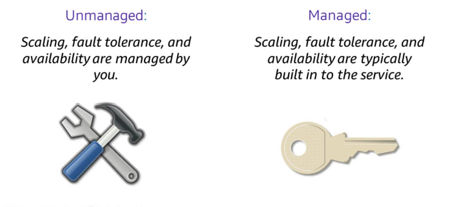
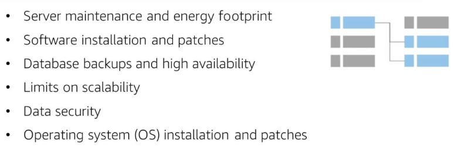
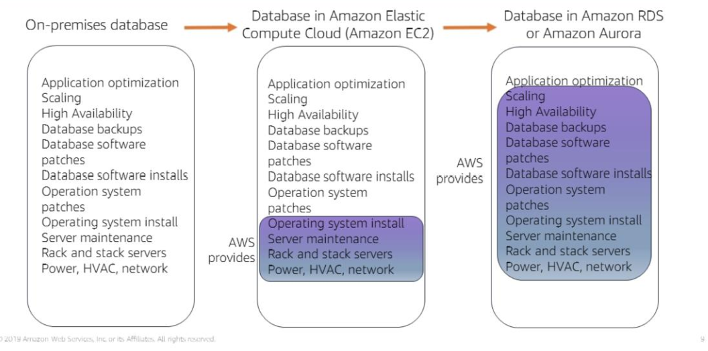
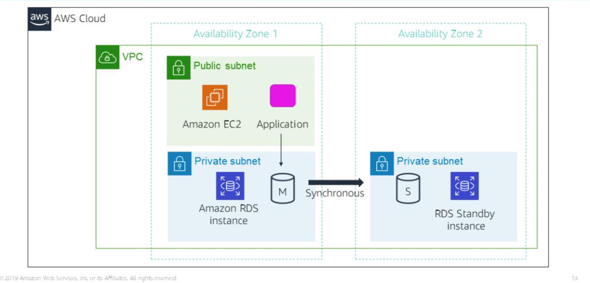
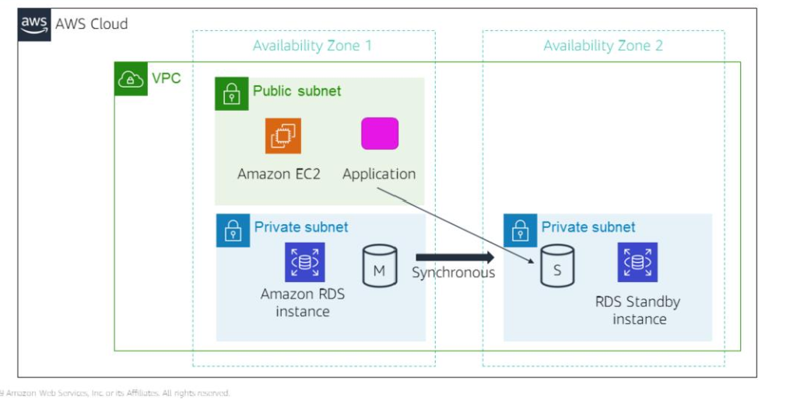

Unmanaged services require the user to do the provisioning and manage how their solution handles load changes, errors and when resources are unavailable. But, in return, this gives the user more fine-grained control over their cloud solutions.
For instance, with an EC2 instance, the user must manage how their EC2 instance should scale to handle increased traffic loads by specifying a scaling solution like AWS Automatic Scaling.
Managed services require the user to configure them and set permissions. With AWS S3, the user just needs to configure permissions and set up an S3 bucket; AWS S3 will handle scaling, fault-tolerance and availability automatically.
Amazon RDS is a managed relational database service in the cloud.

These tasks associated with running your own relational database are addressed by Amazon RDS.

Running your relational database on EC2
RDS or Amazon Aurora (these are platforms as a service)
Database instance - an isolated database environment that can contain multiple user-created databases
Database Instance Class
Database Instance Storage
Pricing depends on the selected instance class and storage.
Supported relational database engines:
You can run database instance in a VPC, usually in a private subnet.
What does it mean to seed a database copy?
With AWS RDS, you have the ability to configure your database instance for high availability with Multi-AZ deployment.

RDS automatically generates a standby copy of your database instance in another Availability Zone within the same VPC.
Database transactions are synchronously replicated to the standby copy, thereby minimising chances of data loss.

This means that if the main database instance fails, Amazon RDS will automatically bring in the standby database instance as the new main instance. This is made possible by referencing the database instance by name using the RDS DNS (Domain Name System) endpoint in your applications.
RDS also lets you created read replicas for MySQL, MariaDB, PostgresSWL and Amazon Aurora database instances.
Updates to the source database instance are asynchronously copied to the replica instance.
For scaling purposes, you can redirect read-heavy database queries to your read-only replica instance, thereby reducing the load on your primary instance.
It is also possible to convert your replica instance into the primary instance.
Read-only replica instances can also be created in a different Region to your primary database instance.
Ideal conditions for using Amazon RDS
When not to use RDS
Alternative solutions:
Clock-hour billing - you pay for the time your resources are running. This includes the resources expended from the time you launch a database instance until you terminate that database instance.
Your database engine, size and memory class will also affect the pricing.
Purchase types:
You can also provision multiple database instances for horizontal scaling.
Provisioned storage
Additional storage
Deployment types
These affect your storage and I/O charges
Data transfer
DB subnet groups tell Amazon RDS which subnets can be used for RDS database instances.